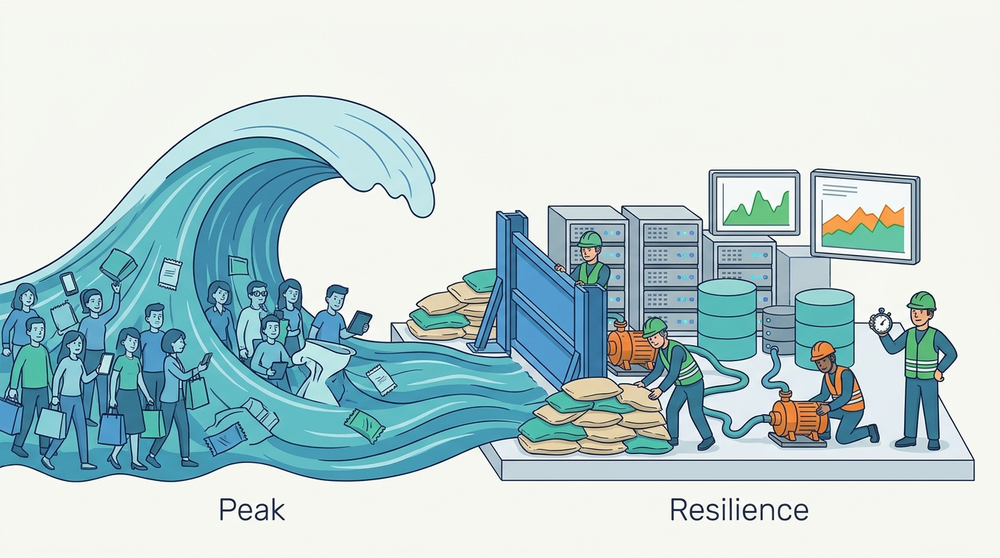

Part VII — PLATFORM: How Commerce Platforms Are Built
Black Friday Every Year: Peak Load, Resilience and Recovery
AI-assisted: researched and written with Claude Code and Codex; illustrations generated with Gemini and OpenAI image tools. How this works
